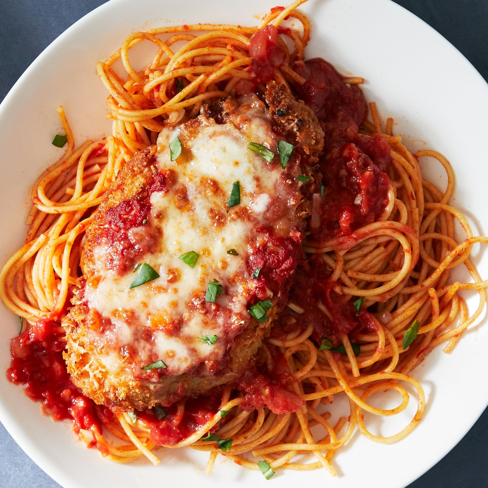

Chicken Parmesan

Description
A golden brown fried chicken cutlet breaded with fresh Italian breadcrumbs and seasoned with colorful sazon and black pepper.
Ingredients:
- 1 pound of thinly sliced chicken breast
- 8 ounces of seasoned Italian breadcrumbs
- 8 ounches of thickly sliced fresh mozzerella cheese
- 4 ounces of finely shredded fresh parmesan cheese
- 1 jar of Rao's Famous tomato sauce
- 2 large eggs
- 3 fresh garlic cloves
- Salt & pepper
- Sazon seasoing
- Fresh basil
Steps:
- Crack the two large eggs in a medium sized bowl and scramble until evenly mixed.
- Fill another medium sized bowl with breadcrumbs.
- Peel and dice the fresh garlic and add half into the eggs.
- Heat a medium frying pan with oil and let sit until hot.
- In the mean time, season your chicken cutlet breast with salt, pepper, sazon and fresh garlic.
- Dip a single chicken breast in the egg until gernously coated.
- Repeat with the breadcrumbs. Be sure to coat the entire chicken breast.
- Repeat for each slice of chicken breast.
- Gently place 2 to 3 slices of the coated chicken breast in the oil. Make sure the oil is hot enough.
- Cook the chicken for 3-4 minutes a side or until consistently golden brown. Do not overcook the chicken as we will finish it in the oven.
- Repeat for all chicken slices.
- Remove chicken slices on place them on the plate with paper towel to soak excess oil for 5 to 10 minutes.
- Preheat oven to 350 degrees. Prepare cooked chicken slices on a large baking sheet.
- Cover chicken in a generous amount of Rao's Famous tomato sauce.
- Top each slice with fresh mozzerella cheese and place gently cover with more sauce.
- Bake until cheese is melted and remove to cool.
- Top with fresh basil and parmesan cheese and heat additional sauce if neccessary.
- Serve with pasta and garlic bread.